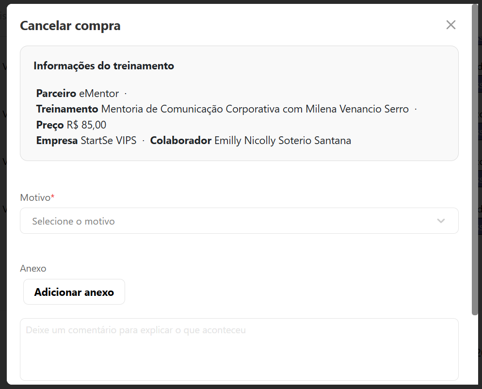
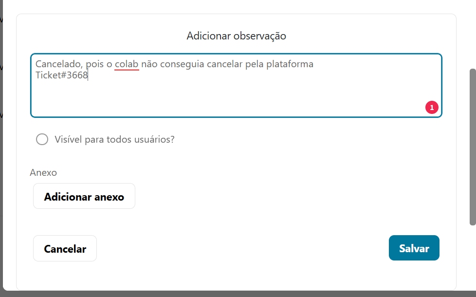

Fluxos de Atendimento – Estácio
Manual operacional para matrícula, rematrícula, cancelamento e cursos livres
1. Fluxo de Matrícula
Contexto: Colaborador realizou a inscrição e aguarda acesso ao curso.
Passo inicial — Processo padrão
- O colaborador realiza a inscrição pela Skill.
- A Estácio efetiva a inscrição após alguns dias.
- O colaborador envia os documentos no portal da Estácio dentro do prazo.
- Após o envio e aprovação, a matrícula é gerada.
Verificação:
- Acesse o link abaixo e informe o CPF do colaborador:
Ação:
- Copie o link exibido após a consulta.
- Envie o link ao colaborador.
- Solicite um print da tela.


- Verifique todo o histórico no Zendesk.
- Verifique registros no ADMIN.
- Verifique a data de solicitação do pedido no ADMIN. caso tenha passado muito tempo considere a abertura de um chamado
- Avalie também o portal do SIA antes de abrir chamado para o time N2.
- Sempre solicite print para conferência.
- Verifique se os documentos estão enviados e aprovados.

Caso todos os documentos estejam corretos, acesse o SIA para verificar se a matrícula foi gerada.

- Solicite que o colaborador verifique no perfil do portal da Estácio se consta a data de início das aulas.
- Se a data aparecer, oriente que ele aguarde. Em breve será gerada a matrícula e ele recebrá os acesso
- Caso não apareça, entenda o dia que ele fez o envio dos documentos e analisem se cabe chamado para N2
Se a matrícula já estiver gerada, enviem a macro:
Verifiquei que sua matrícula foi gerada. Para acessar, entre no Portal da Estácio. Insira a matrícula: XXX e clique em Esqueci a senha / Cadastrar primeira senha. Me confirme, por favor, se deu certo.
2. Fluxo de Rematrícula
- O colaborador envia o histórico do semestre concluído no portal da Skill.
- Realiza o aceite do contrato educacional da Estácio.
- Aguarda novas orientações do time interno.
Olá! Espero que esteja bem.
Entendemos a sua preocupação em relação à sua rematrícula.
Para garantir que você siga o fluxo correto e permaneça dentro
do programa Skill, é fundamental seguir os seguintes passos:
1. Aceite do contrato com a Estácio.
2. Aguarde as orientações da Skill para os próximos passos.
ATENÇÃO!
Não acione a Estácio por WhatsApp, polo ou telefone
e não realize nenhum pagamento por conta própria.
Isso pode gerar uma matrícula fora do programa Skill.
Seguimos à disposição!
3. Fluxo de Cancelamento
- Informe que o cancelamento deve ser solicitado diretamente à Estácio.
- Após isso, ele deve enviar o comprovante para a Skill.
- Com o comprovante, abra um chamado para o time N2.
NUNCA REALIZE CANCELAMENTO DE GRADUAÇÃO E PÓS-GRADUAÇÃO DA ESTÁCIO
- Realize verificação interna.
- Abra chamado para o time N2, informando ausência de matrícula no SIA.
4. Cursos Livres
Para cursos livres da Estácio, o acesso segue o fluxo padrão.
Acesse o link: https://app.profissionalizantes.estacio.br/
Entre com seu e-mail seu cadastrado cadastrado: xxx, e a senha padrão: 12345678
Depois, me confirme se deu certo.
Caso de algum erro, tente realizar o reset de senha. Se o problema persistir, verifiquem a data de solicitação e analisem se convém abrir chamado para o time N2.
- Solicite evidência do erro (print).
- Realize o cancelamento pela plataforma Skill ADMIN.
- Registre o número do ticket nas observações do ADMIN.
Em cursos livres o N1 pode realizar cancelamentos apenas em casos específicos e com as evidências necessárias.
Para cancelar o pedido siga as etapas:
- Acesse a plataforma Skill ADMIN
- Vá até o pedido do colaborador que deseja cancelar
- Ao rolar aa tela para baixo, terá o botão "Erro/Cancelar Matrícula", Clique nesse botão
- Aparecerá uma tela para que você revise os dados, insira o motivo e confirme o cancelamento: 
- insira motivo, verifique se é o curso certo
- No campo em branco, abaixo do Anexo você pode descrever o motivo do cancelamento, Nesse campo o colaborador recebe a mensagem
- Voltando no pedido do colab, descendo um pouco o card você escntrará a informação: "Adicionar observação" Clique nesse campo 
- Você pode apenas insirir o motivo de cancelamento, colocar o número do ticket de atendimento e clicar em salvar. Assim você deixa registrado e o colaborador não tem visualização disso.
Aqui, caso não queira selecionar descrição nesse campo em branco, você pode apenar , rolar a tela para baixo e clicar no botão "Cancelar compra"